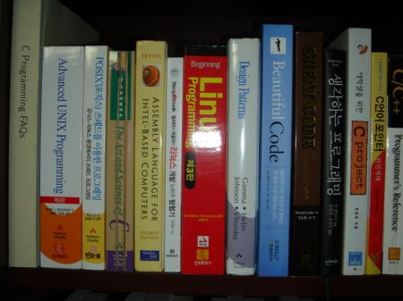

Books, books, books.
9/12/2009
시간을 내서 책들을 정리했다.
책장에 모셔놓고 보니 또 배치가 마음에 들지 않아서 시간이 더 걸렸다.
얼추 정돈한 다음 사진을 찍었다.
책장에 모셔놓고 보니 또 배치가 마음에 들지 않아서 시간이 더 걸렸다.
얼추 정돈한 다음 사진을 찍었다.
문 밖에서 본 정경. 책장 방이 콩만한 관계로 오른쪽 끝이 잘렸다.
어떻게 좀 다 나오게 해 보려고 문가에 붙어 발광하면서 찍었다.
오른쪽에서 본 각도는 포기하고 왼쪽에서는 각이 나올까 하여 다시 한번 시도. 하지만 각은 더 안 나온다.
전체를 풀샷으로 박는 것은 포기하고 어떤 책들이 있나 보자.
말당선생을 키운 건 팔할이 바람이라더니, 내가 번 돈의 90%는 이걸로 벌었을 거다.
말당선생을 키운 건 팔할이 바람이라더니, 내가 번 돈의 90%는 이걸로 벌었을 거다.
얼마 못 받던 초년병 시절부터 오라일리 책은 진리라고 생각하고 아까운줄 모르고 질러댔었지.
이렇게 출판사별로 모아놓고 보니 이건 뭐 동물원이구만.
제일 왼쪽 책인 Practical Java 는 Effective Java 가 나오기 전 까지는 거의 유일하다시피한 코드 레벨 지침서였는데. 또한 wrox 의 시뻘건 책들도 많이도 사 모았다. 너무 짧은 시간에 너무 많은 책들을 내다 보니 퀄러티에 문제가 있는 것들도 있었고. 결국은 망했지.
그러도 보니 어찌 어찌 제본한 책도 좀 있구나.
지금은 이클립스를 쓰지만 막상 이런 책들을 살 때 까지는 닥치고 JBuilder 였기 때문에 끝까지 읽은 eclipse 책은 없는 것 같다. - 근데 제일 끝의 이솝 우화랑 파인만의 물리학 강의록은 뭐냐 ㅡ.ㅡ;;
(천한?) 출신 성분 못 버리고 수학에 관한 교양 서적을 사고, 낑낑대며 읽고는 은근슬쩍 직업 수학자에 대한 환상을 품다가. 바로 포기하곤 잔다.
수학책 뿐 아니라 과학책들도 좀 읽었다. (에헴) 저 코스모스 는 중학생때 산 책인데 아직도 애지중지 하면서 들고 다닌다.
인문학에도 조예가 깊다(!?!) 는 것을 보여주는 구획! 저 사회 심리학 책은 심리학 수강하면서 너무 마음에 들어서 샀다.

비트겐슈타인, 칸트 에 대한 편협한 애정을 보여주는 구획.
그렇다. 한때 씨샵을 해 보려고 저 큰 책을 읽어댄 적이 있었지. 하지만 언제나 결론은 남자라면 TeX 이란 거다.
남자의 책들이 모여있는 구획이다. 남자라면 (이맥스,펄) 그것은 진리.

세상은 남들이 말하는 대로 존재하는 것이 아니다는 것을 알 수 있게 해 주는 책들.

요츠바다 요츠바. 다 늙어서도 요츠바랑?! 보면서 히죽대는 것이 전혀! 부끄럽지 않다.
SF 소설은 왜 자꾸 절판되는 걸까? 그리고 나는 왜 시공사 책을 살 수 밖엔 없는 걸까.
싼 맛에 고전들을 사지만 막상 끝까지 읽은 게 없다는게 아쉬울 뿐. 시간 없다는 건 다 비겁한 변명이라는데...
대학 1학년때 율리시즈가 명작이라고 큰돈들여 사놓고 어언 20년 가까지 펴보지도 않은 한마디로 돈 아까운 책.
음악적인 소양 또한 보여주는 구획. 서양음악 이야기 시리즈는 각각 20번씩은 읽은 듯 하다. (그림으로 읽는 이란 부분은 그냥 잊어줘)
볼때마다 가슴이 미어져서 그냥. ㅠ.ㅠ;;
한 2년 전 즈음에 은근 미쳐서 학교때 대충 넘어간 책들을 도로 읽어 보자 생각에 집합론 책부터 읽기 시작했다. 집합론 책 2권 다 읽고선 다음은 위상이다 생각을 했는데... 했는데... 그 다음은 생각나지 않는다. ㅠ.ㅠ
TACP 는 읽지 않더라도 모셔 놓아야 한다는 말에 혹해서 정말! 모셔놓고만 있다. 실은 앞부분 수학 부분까지 읽고선 어셈블리 가 나오길래 어셈블리 책을 사 놓고선 또 정신줄 놓는 바람에... 컥.
병렬 컴퓨팅, 데이터 스트럭쳐, 알고리즘, 리눅스 커널, 내가 알고 있는 컴퓨팅의 모든 것의 기반은 다 여기서 얻은 거라고 말하면 과장일까?

저기 중간의 노란 책이 바로 TACP 를 인터럽트 걸고선 다시 깨워주지 않은 바로 그 어셈블리 책. 하지만 인터럽트 건 것도 나고, 이 책을 안 읽은 놈도 나지. 누굴 탓 하겠는가.
저기 중간의 노란 책이 바로 TACP 를 인터럽트 걸고선 다시 깨워주지 않은 바로 그 어셈블리 책. 하지만 인터럽트 건 것도 나고, 이 책을 안 읽은 놈도 나지. 누굴 탓 하겠는가.